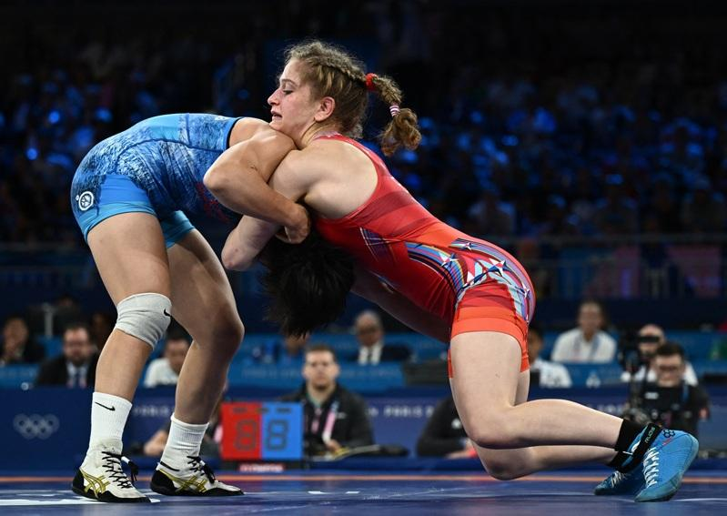
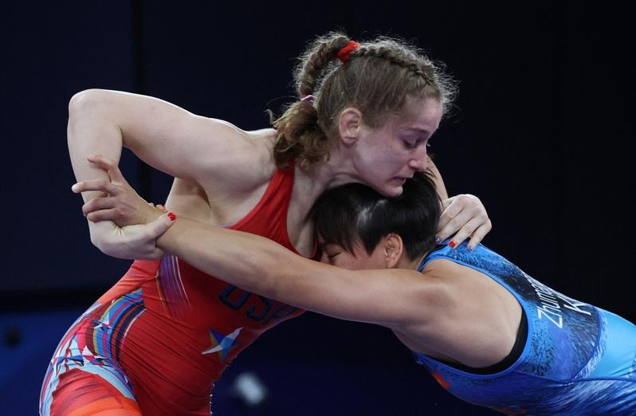

巴黎奥运女子摔角赛事，美国队选手、来自加州的20岁女将艾洛尔(Amit Elor)6日在68公斤级别项目决赛中，以3-0击败哈萨克斯坦选手茹马纳扎罗娃(Meerim Zhumanazarova)，勇夺金牌；艾洛尔这5年来比赛未尝败绩，6日更是登峰造极。
「雅虎体育」(y!sports)报导，艾洛尔比赛前段先以抱摔拿下两分，接下来茹马纳扎罗娃在第一回合赛事已结束还攻击，被罚1分；艾洛尔接下来控制第二阶段，没让茹马纳扎罗娃有任何得分机会，最终拿下胜利。艾洛尔成为美国摔角选手里，拿下奥运金牌的最年轻选手。
艾洛尔在美国奥运代表队592名选手里，目前应该是最占优势的选手。她一路过关斩将，来到6日决赛，总合得分28-2。她被迫由平常的72公斤级别减重，因为奥运项目并无那个级别，结果一出赛便击败现任68公斤级别世界冠军、土耳其的托森(Buse Tosun Çavuşoğlu)；两人踏上赛场，托森似乎因害怕艾洛尔而僵住，最后以2-10败给艾洛尔。
艾洛尔接下来面对波兰选手霍卢伊(Wiktoria Choluj)。她积极抢攻，身形极稳，技术极佳，让霍卢伊在赛后几分钟待在采访区泫然欲泣。
几小后第三轮准决赛，艾洛尔面对北韩的朴率琴，以抱摔等技巧，27秒内拿下10分；整个准决赛只耗时1分44秒，最后艾洛尔以技术优势获胜。
艾洛尔出生于2004年1月1日，因此在东京奥运以年纪差一天而无法出赛，巴黎奥运是她首次登场的奥运赛事。
艾洛尔之父是以色列移民，她有兄妹六人；她四岁起接触到摔角，正式出赛前几年，她摔赢男子，但很多教练很不高兴。艾洛尔5日回忆时还说，自己生涯早期的教练「对她很严」，在摔角练习场给她的正面印象无多，让她认为自己不擅长摔角，即使她现今取得这么多佳绩，对自己的观感仍很负面。

巴黎奥运热话题
- 乒乓／台湾男团不敌日本止步8强 庄智渊奥运之旅结束
- 法撑竿跳选手下体打落横杆出局 引来色情网站开价
- 全红婵丑拖鞋、黄雨婷发夹卖翻 有商家2天接60万个订单
- 日本羽球女神红了 志田千阳被挖角进演艺圈
- 「美到像AI」匈牙利21岁女剑客脱下面罩惊艳全场